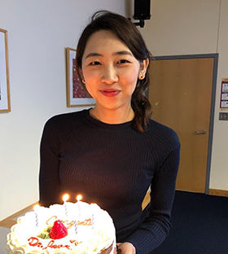

Myungha Jang
Research Engineer at Netflix
Member AI Evals & Understanding · LLM-based user simulation
I’m a Research Engineer at Netflix, where I work on LLM-based user simulation on the Member AI Evals and Understanding team. Previously, I was a Senior Machine Learning Engineer at Pinterest (2023–2025) and a Senior Research Scientist at Meta (2019–2023). I earned my Ph.D. in Computer Science, with a focus on information retrieval, from UMass Amherst under Prof. James Allan in the Center for Intelligent Information Retrieval (CIIR), where I worked on detecting, modeling, and explaining controversy on the Web.
News
-
I participated as a panelist in the Women in AI Career Workshop 2026 at Ewha Womans University, supported by the Google ExploreCSR Workshop Series.
-
I gave a talk on modern recommendation systems at Yonsei University, Sungkyunkwan University (SKKU), and Naver.
-
I joined Netflix as a Research Engineer on the Member AI Evals and Understanding team, working on LLM-based user simulation.
-
Our paper “Evidentiality-aware Retrieval for Overcoming Abstractiveness in Open-Domain Question Answering,” a collaboration with the Data & Language Intelligence Lab at Yonsei University, was accepted to Findings of EACL 2024.
-
I started a new position at Pinterest as a Machine Learning Engineer, working to improve the relevance of related-pins feed recommendations.
Earlier news
-
I served on a panel on trends in AI research and careers in Silicon Valley at the AIAI 2021 workshop.
-
I gave invited career talks at Sungshin Women’s University, Ewha Womans University, and Yonsei University.
-
Our U.S. patent, “Methods for automated controversy detection of content,” was granted (US 10,949,620 B2).
-
Our paper “Explaining Text Matching on Neural Natural Language Inference” was published in ACM TOIS.
-
I served on the program committee of the 3rd International Workshop on Mining Actionable Insights from Social Networks (MAISoN) 2019, co-located with ICTIR 2019 in Santa Clara, CA.
-
I started at Facebook (now Meta).
-
I successfully defended my Ph.D. thesis, which is available online here.
-
Our short paper “Explaining Controversy on Social Media via Stance Summarization” was accepted to SIGIR 2018.
Experience
Industry
-
Jan 2025 – Present
Senior Research Engineer · Netflix
Member AI Evals and Understanding. Working on LLM-based user simulation.
-
Aug 2023 – Jan 2025
Senior Machine Learning Engineer · Pinterest
Improved the relevance of related-pins feed recommendations.
ML Tech Lead, Aug 2024 – Jan 2025.
-
2019 – 2023
Senior Research Scientist · Meta (formerly Facebook)
Research Scientist 2019–2022, promoted to Senior Research Scientist in 2022.
-
Jun – Aug 2017
Machine Learning Software Engineer Intern · Facebook, CA
-
May – Aug 2015
Research Intern · IBM T.J. Watson Research Center, NY
Worked with Kenneth W. Church.
Academia
-
2013 – 2019
Research Assistant · Center for Intelligent Information Retrieval, UMass Amherst
-
2011 – 2012
Research Assistant · Data Intelligence Lab, POSTECH
-
2008 – 2010
Undergraduate Research Intern · Bioinformatics Lab, Ewha Womans University
Selected Publications
A selection of my work. The full list is on Google Scholar.
2024
-
Evidentiality-aware Retrieval for Overcoming Abstractiveness in Open-Domain Question Answering
Findings of EACL 2024 Retrieval & QA
2021
-
Methods for automated controversy detection of content
U.S. Patent 10,949,620 B2 PatentControversy
2020
-
Explaining Text Matching on Neural Natural Language Inference
ACM Transactions on Information Systems (TOIS), Sep 2020 NLI
2019
-
Probabilistic Models for Identifying and Explaining Controversy
Doctoral dissertation, College of Information and Computer Sciences, UMass Amherst, May 2019 Thesis
2018
-
Explaining Controversy on Social Media via Stance Summarization
SIGIR 2018 ControversyACM DL
-
Visualizing Polarity-based Stances of News Websites
NewsIR Workshop at ECIR 2018 News IR
2017
-
Modeling Controversy Within Populations
ICTIR 2017 ControversyDemo & dataset
-
Improving Document Clustering by Eliminating Unnatural Language
W-NUT 2017 at EMNLP Data miningDataset & tool
2016
-
Probabilistic Approaches to Controversy Detection
CIKM 2016 Controversy
-
Improving Automated Controversy Detection on the Web
SIGIR 2016 Controversy
Education
-
2013 – 2019
Ph.D., Computer Science · University of Massachusetts Amherst
Advised by Prof. James Allan
-
2011 – 2012
M.S., Computer Science · POSTECH, South Korea
Advised by Prof. Seung-won Hwang. Early graduation.
-
2006 – 2011
B.S., Computer Science · Ewha Womans University, South Korea
Graduated Magna Cum Laude.
Honors & Awards
- 2016 KSEA-KOCSEA Graduate Scholarship
- 2016 UKC Best Poster Award
- 2014 Anita Borg Grace Hopper Scholarship
- Student Travel Awards from AAAI 2011, SIGIR 2016, and CIKM 2016
- Magna Cum Laude, Ewha Womans University
- 2012 Silver Prize, Ewha Senior Capstone Design Contest
- 2010 Undergraduate Research Program (URP) Fellowship ($10,000), funded by the Korea Foundation for the Advancement of Science and Creativity
- 2010 KB Bank Study Abroad Scholarship ($12,000)
- 2008–2010 Dean’s List Scholarship
Service
- 2017–18 New Students Committee, UMass Amherst
- 2014–15 Co-chair, CS Women Group, UMass Amherst
- 2014–15 Social Committee, UMass Amherst CS
- 2006–08 Administrator, Ewhaian.com
Beyond work
So Dabang
I occasionally write in my Korean blog.
YouTube
I’m an aspiring YouTuber, though it’s not always easy to find time to make new videos when work gets busy.
How to pronounce my name
Think of it as saying [Mee-young-ha] fast. Here’s my tutorial video.